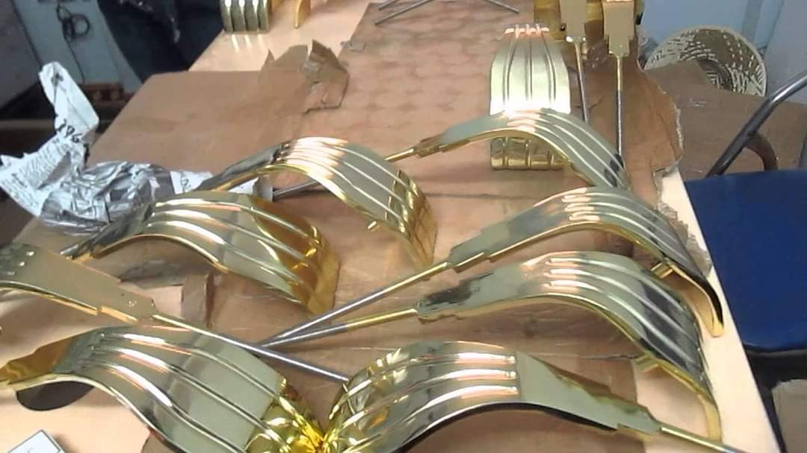

Thông tin chi tiết

Xi mạ đồng vàng
Xi mạ đồng là lớp phủ đông lên kim loại bằng phương pháp xi mạ điện phân kim loại trong dung dịch xi mạ đồng. Trong đó Đồng đóng vai trò là Anode, và kim loại cần xi mạ là Cathode.
Thông tin sản phẩm
-
Xi mạ đồng vàng là gì?
Xi mạ đồng là lớp phủ đông lên kim loại bằng phương pháp xi mạ điện phân kim loại trong dung dịch xi mạ đồng. Trong đó Đồng đóng vai trò là Anode, và kim loại cần xi mạ là Cathode.
 -
Tại sao nên Xi mạ đồng vàng?
Tính trang trí cao cấp cho các sản phẩm đòi hỏi độ tinh xảo cũng như màu sắc tươi sáng. Lớp mạ đồng có chiều dày từ 20-50 micron giúp sản phẩm có được vẻ bề ngoài láng bóng, sang trọng.
-
Quy trình Xi mạ đồng vàng:
- Gia công bề mặt: Giúp cho bề mặt vật liệu có độ đồng đều tạo độ nhẵn bóng giúp cho quá trình mạ đồng thau có được độ bám dính cao hơn.
- Rửa vật liệu: sau công đoạn gia công ta phải rửa một cách sạch nhất.
- Tẩy dầu điện hóa: dưới tác dụng của dòng điện, oxy và hidro thoát ra có tác dụng cuốn theo các hạt mỡ bám vào bề mặt, phương pháp ta phải sử dụng dung dịch kiềm chỉ cần pha loãng hơn so với tẩy hóa học.
- Rửa sạch: ta phải rửa xạ bề mặt vật liệu lại một lần nữa.
- Tiến hành quy trình xi mạ đồng.
- Trong quy trình mạ đồng cần chú ý đến gắn vật liệu cần mạ vao cực âm catot, gắn kim loại mạ vào cực dương anot vào nguồn điện. Lúc này, cực dương của nguồn điện sẽ hút các electron e ,trong quá trình oxi hóa và giải phóng các ion kim loại dương và hình lợp kim loại bám trên vật liệu cần mạ. Độ dày của lớp mạ tỉ lệ thuận với cường độ dòng điện của nguồn và thời gian mạ.
-
Ứng dụng việc Xi mạ đồng vàng
Trong ngành công nghiệp hiện đại, lớp xi mạ đồng thường được sử dụng khá rộng rãi: từ những vật dụng trong nhà, những vật dụng trang trí cho đến những thiết bị, máy móc công nghiệp,..
-
Lợi ích khi Xi mạ đồng vàng
Khả năng chống chịu cao, gia tăng khả năng chống mài mòn, kéo dài tuổi thọ cũng như thời gian sử dụng, có tính thẩm mỹ cao.